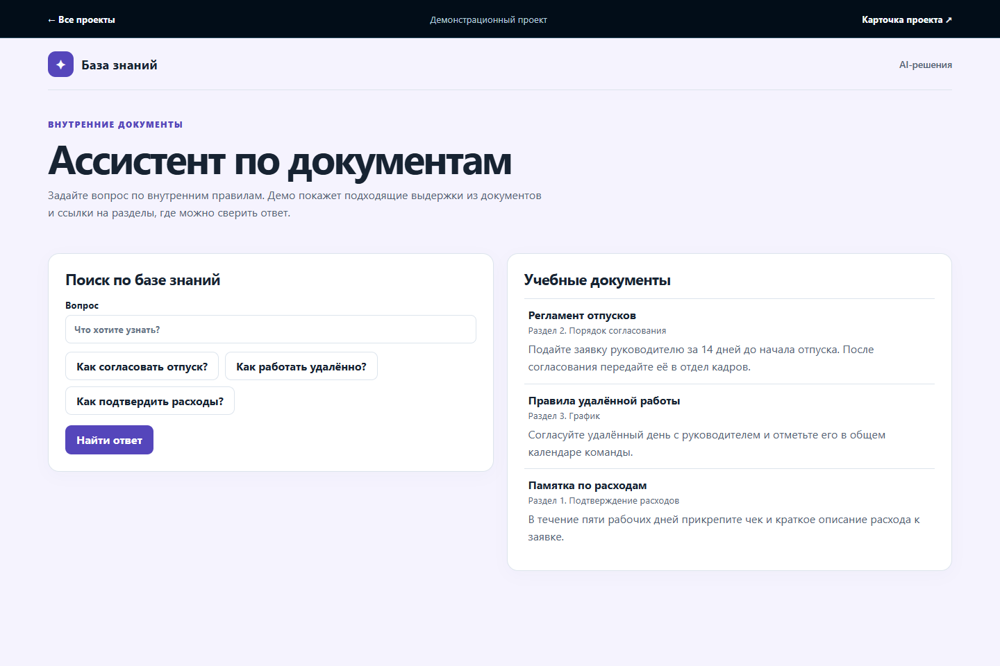
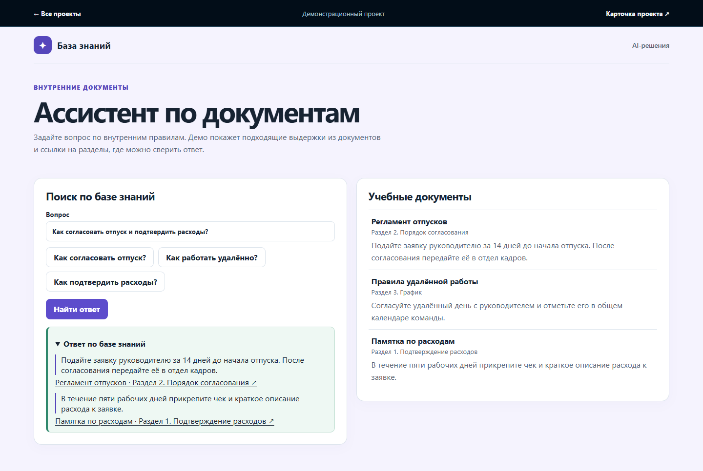

Ассистент по документам
Для команды, которая тратит время на поиск по регламентам и инструкциям. Сотрудник быстро находит нужный фрагмент и проверяет его в источнике.
Что умеет решение
Локальный поиск по ключевым словам находит совпадения в трёх учебных документах. Ответ содержит выдержки из всех найденных разделов и ссылки на них. Если совпадений нет, демо подсказывает, о чём можно спросить.
Попробуйте в демо
Спросите «Как согласовать отпуск и подтвердить расходы?». Перейдите по ссылке под любой из двух выдержек. Затем введите вопрос о зарплате, чтобы проверить подсказку.


Поиск работает в браузере по учебным текстам на странице. Сторонний аналог на GitHub ↗

